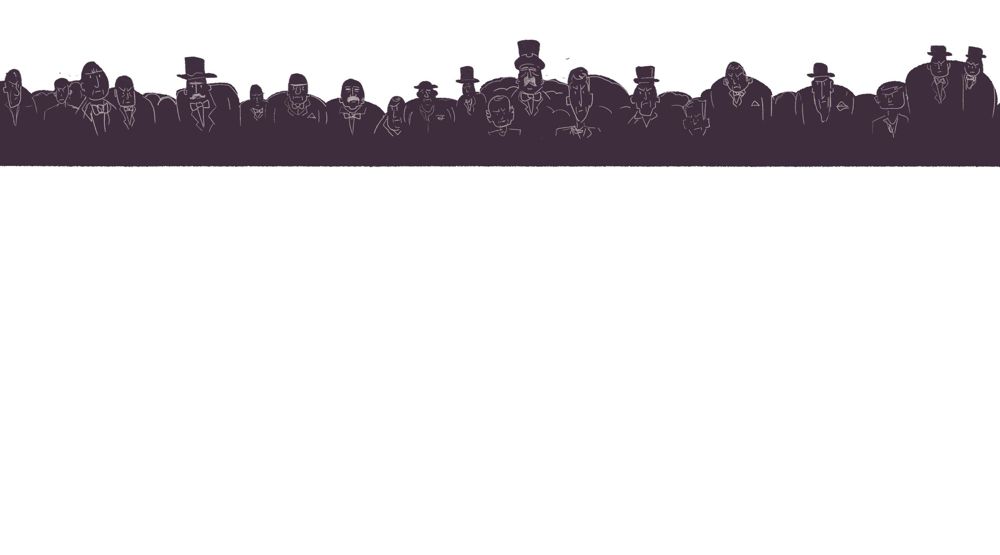
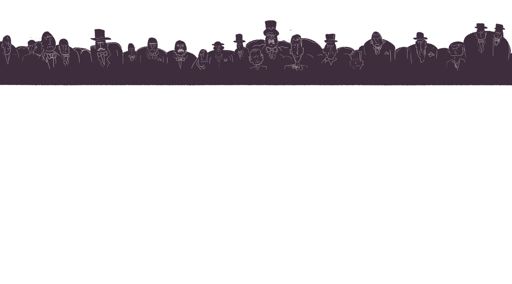

Wall Test
It stopped Chinese laborers from coming into the country and those already here from naturalizing.
There were loopholes, however. Special provisions allowed Chinese businessmen to enter
and to sponsor the emigration of wives and children. These were known as “merchant exemptions.”
For a time Chinese restaurant owners counted as “laborers,” whose immigration opportunities had been eliminated by the Chinese Exclusion Act of 1882.